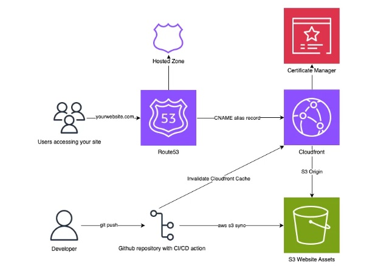
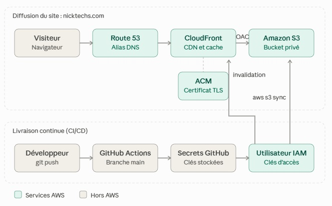

Déploiement d’un site web statique sur AWS avec CI/CD (S3 + CloudFront)
Site portfolio rapide, sécurisé et peu coûteux, hébergé sur Amazon S3, diffusé par Amazon CloudFront et mis à jour automatiquement avec GitHub Actions.
- Date
- 13 octobre 2026
- Site
- nicktechs.com
- Code source
- sitewebstatics3
- Auteur
- Eyanam TCHALIM
Contexte et objectifs
Ce projet décrit la conception, le déploiement et l’optimisation d’un site web statique sur AWS. Il a été conçu pour créer un site portfolio rapide, sécurisé et facile à maintenir. Il s’agit de https://nicktechs.com.
Le nom de domaine nicktechs.com a été acquis pour ce site. Le besoin impose une architecture simple et peu coûteuse, un accès sécurisé en HTTPS, des frais d’exploitation minimaux et une gestion simplifiée des mises à jour.
Objectifs :
- permettre l’accès au site nicktechs.com en HTTPS ;
- garder une architecture simple, sans serveur à administrer ;
- maintenir des frais d’exploitation minimaux ;
- versionner le site dans GitHub pour simplifier la gestion et la restauration des mises à jour ;
- automatiser le déploiement avec GitHub Actions, en limitant les droits au strict nécessaire.
Architecture
Les visiteurs atteignent le site par Route 53 et CloudFront ; le contenu est stocké dans S3 et mis à jour par un pipeline GitHub Actions.
Les requêtes des utilisateurs sont acheminées via Route 53 vers une distribution CloudFront, qui diffuse le contenu mis en cache depuis un compartiment S3. ACM fournit le certificat SSL utilisé pour la diffusion HTTPS via CloudFront.
Le site est construit en HTML. Les mises à jour sont préparées localement et versionnées dans GitHub avant leur déploiement sur AWS.


Flux d’une requête
- Le visiteur saisit nicktechs.com ; Route 53 renvoie l’adresse de la distribution CloudFront.
- La connexion HTTPS s’établit avec CloudFront, avec le certificat fourni par ACM.
- Si le fichier demandé est en cache, CloudFront le renvoie immédiatement.
- Sinon, CloudFront le lit dans le compartiment S3, le met en cache puis le renvoie au visiteur.
Flux de mise à jour
- Le développeur modifie le site localement et exécute
git pushvers GitHub. - GitHub Actions déclenche le workflow de déploiement.
- Le workflow s’authentifie auprès d’AWS avec l’identité IAM.
- Il synchronise les fichiers vers S3 (
aws s3 sync). - Il invalide le cache CloudFront pour que la nouvelle version soit visible immédiatement.
Services AWS utilisés
Le site repose sur cinq services AWS, auxquels s’ajoute GitHub pour le code et l’automatisation.
| Service | Rôle dans le projet | Réglage clé |
|---|---|---|
| Amazon S3 | Stockage des fichiers HTML et CSS du site | Compartiment privé, lu uniquement par CloudFront (OAC) |
| Amazon CloudFront | Diffusion mondiale, cache et HTTPS | Redirection de HTTP vers HTTPS, certificat ACM, objet racine index.html |
| Amazon Route 53 | DNS et gestion du domaine | Zone hébergée nicktechs.com, enregistrements alias vers CloudFront |
| AWS Certificate Manager (ACM) | Certificat SSL/TLS pour HTTPS | Certificat public pour nicktechs.com, créé en us-east-1 (obligatoire pour CloudFront) |
| AWS IAM | Droits du déploiement automatisé | Identité dédiée, limitée au compartiment du site et à l’invalidation CloudFront |
| GitHub et GitHub Actions | Dépôt du code, versionnement et pipeline | Dépôt sitewebstatics3, déploiement à chaque push sur la branche principale |
Sécurité
La sécurité repose sur le chiffrement HTTPS, un accès au stockage réservé à CloudFront et des droits de déploiement limités au strict nécessaire.
Chiffrement et accès
- HTTPS obligatoire : le certificat ACM sécurise les échanges et CloudFront redirige tout le trafic HTTP vers HTTPS.
- Compartiment non public : seul CloudFront peut lire les fichiers, grâce à un Origin Access Control (OAC) ; la politique du compartiment est limitée à la distribution.
- Surface d’attaque réduite : un site statique n’a ni serveur applicatif, ni base de données, ni formulaire à protéger.
Droits de déploiement
Le pipeline utilise une identité IAM dédiée, dont les droits sont limités au compartiment du site et à l’invalidation du cache CloudFront.
- Le workflow s’authentifie avec les clés d’accès de cet utilisateur IAM, conservées dans les secrets du dépôt GitHub (
AWS_ACCESS_KEY_IDetAWS_SECRET_ACCESS_KEY) ; elles ne sont jamais écrites dans le code. - Le déploiement n’est déclenché que par la branche principale (
main), ce qui empêche qu’une branche de test modifie le site public.
Fiabilité et performance
Il n’y a aucun serveur à maintenir : la disponibilité et la performance reposent sur les services gérés S3, CloudFront et Route 53.
| Domaine | Mécanisme |
|---|---|
| Diffusion | CloudFront sert le contenu depuis ses points de présence les plus proches du visiteur, avec mise en cache |
| Cache | Les fichiers sont servis depuis le cache de CloudFront ; S3 n’est sollicité que lorsqu’un fichier est absent du cache ou invalidé. |
| Contenu léger | Le site est en HTML et CSS statiques, sans traitement côté serveur, ce qui limite le temps de chargement. |
| Stockage | S3 Standard conserve les objets de façon redondante dans plusieurs zones de disponibilité |
| DNS | Route 53 est un service DNS géré, sans serveur à exploiter |
| Mises à jour | Invalidation du cache après chaque déploiement : la nouvelle version est visible rapidement |
| Restauration | Le site est versionné dans GitHub : revenir à une version précédente consiste à annuler un commit puis à pousser, ce qui relance le déploiement |
Mise en œuvre
La mise en place suit sept étapes ; ensuite, chaque mise à jour du site se déploie par un simple git push.
- Acquérir le nom de domaine nicktechs.com et créer la zone hébergée Route 53.
- Créer le compartiment S3 du site, avec l’accès public bloqué.
- Demander dans ACM, en région us-east-1, un certificat pour nicktechs.com.
- Créer la distribution CloudFront : origine S3 avec Origin Access Control, redirection de HTTP vers HTTPS, certificat ACM, objet racine index.html.
- Créer l’enregistrement alias Route 53 (nicktechs.com) vers la distribution.
- Créer l’utilisateur IAM de déploiement avec la politique limitée de la section Sécurité, puis enregistrer ses clés et l’identifiant de la distribution dans les secrets du dépôt GitHub.
- Ajouter le workflow de déploiement dans
.github/workflows/du dépôt.
Workflow GitHub Actions
Le workflow se déclenche à chaque push sur main, synchronise les fichiers vers S3, puis invalide le cache CloudFront.
name: Deploy static website to AWS S3
on:
push:
branches: [main]
jobs:
deploy:
runs-on: ubuntu-latest
steps:
- uses: actions/checkout@v4
- uses: aws-actions/configure-aws-credentials@v4
with:
aws-access-key-id: ${{ secrets.AWS_ACCESS_KEY_ID }}
aws-secret-access-key: ${{ secrets.AWS_SECRET_ACCESS_KEY }}
aws-region: us-east-1
- name: Synchroniser le site vers S3
run: |
aws s3 sync . s3://nicktech --delete \
--exclude ".git/*" --exclude ".github/*"
- name: Invalider le cache CloudFront
run: |
aws cloudfront create-invalidation \
--distribution-id ${{ secrets.CLOUDFRONT_DISTRIBUTION_ID }} \
--paths "/*"Les exclusions évitent d’envoyer le dossier .git (historique) et le dossier .github (workflows) dans un compartiment qui sert un site public. Vérifiez les versions actuelles des actions dans leur documentation avant de figer le workflow.
Mettre à jour le site
Après modification des fichiers en local :
git add .
git commit -m "Mise à jour du site"
git push origin mainLe déploiement démarre automatiquement ; son déroulement se suit dans l’onglet Actions du dépôt GitHub.
Coûts et optimisation
En fonctionnement normal, le site coûte environ 1,60 $ par mois, dont les deux tiers pour le nom de domaine ; CloudFront, S3 et ACM sont pratiquement gratuits à ce niveau de trafic.
Estimation des coûts
Hypothèses : région us-east-1, 10 000 visites par mois, site de 50 Mo, 2 Mo transférés par visite (soit 20 Go par mois), tarifs à la demande relevés le 13 octobre 2026. Les volumes de trafic sont une hypothèse de travail.
| Poste | Calcul | Estimation mensuelle |
|---|---|---|
| S3 : stockage et requêtes | 50 Mo à 0,023 $/Go, plus quelques centaines de requêtes d’envoi à 0,005 $ les 1 000 | moins de 0,01 $ |
| CloudFront : transfert et requêtes | 20 Go et environ 100 000 requêtes, dans l’offre gratuite permanente (1 To et 10 millions de requêtes) | 0 $ |
| Invalidations CloudFront | Un chemin par déploiement, 1 000 chemins gratuits par mois | 0 $ |
| Route 53 : zone hébergée | 0,50 $ par zone et par mois | 0,50 $ |
| Route 53 : requêtes DNS | 0,40 $ le million ; les requêtes alias vers CloudFront ne sont pas facturées | moins de 0,05 $ |
| ACM : certificat public | Gratuit avec CloudFront | 0 $ |
| Nom de domaine | Environ 13 $ par an pour un .com, selon le registraire | environ 1,08 $ |
| Total mensuel | environ 1,60 $ |
Le trafic devrait dépasser environ 500 000 visites par mois (à 2 Mo chacune) avant de sortir de l’offre gratuite permanente de CloudFront. Au-delà, le transfert sortant est facturé environ 0,085 $ par Go dans la première tranche.
Coûts non inclus : journaux d’accès CloudFront, versioning S3, alarmes CloudWatch. Les tarifs proviennent des pages tarifaires et de la documentation d’AWS, complétées par des sources tierces pour S3 et le prix du domaine ; à confirmer avec l’AWS Pricing Calculator.
Suivi des coûts
- Un budget AWS Budgets de quelques dollars, avec alerte à 80 % et 100 %, signale immédiatement une dérive.
- Des étiquettes de coût (par exemple Projet = site-statique) permettront de suivre ce site dans Cost Explorer si le compte héberge d’autres projets.
Solutions de réduction, avec leur compromis
| Levier | Effet | Compromis |
|---|---|---|
| Optimiser les images (WebP, dimensions adaptées) et minifier le CSS | Moins de données transférées, pages plus rapides | Une étape de préparation avant le déploiement |
| Activer la compression de CloudFront (Brotli, gzip) | Réduit le volume transféré pour les fichiers texte | Aucun compromis notable |
| Cache long sur les fichiers versionnés | Moins de requêtes vers S3, pages plus rapides | Renommer les fichiers à chaque changement, ou invalider |
| Une seule invalidation « /* » par déploiement | Reste dans les 1 000 chemins gratuits par mois | Le cache est vidé en entier après chaque déploiement |
| Classe de prix CloudFront | Réduit le tarif unitaire en excluant les sites de diffusion les plus chers | Latence plus élevée hors Amérique du Nord et Europe ; sans effet tant que le trafic reste dans l’offre gratuite |
| Règle de cycle de vie S3 sur les anciennes versions (si le versioning est activé) | Évite l’accumulation d’anciennes versions payantes | Historique limité à la durée choisie |
| Ne pas ajouter AWS WAF | Évite environ 6 $ par mois (5 $ la Web ACL et 1 $ par règle), soit plus que le coût total du site | Pas de filtrage applicatif, peu utile sur un site statique sans formulaire |
Compromis coût et simplicité
Une architecture S3 et CloudFront ramène les coûts fixes à la zone Route 53 et au nom de domaine : il n’y a ni instance à payer en continu, ni serveur à administrer. Le compromis est l’absence de traitement côté serveur : un formulaire de contact ou une fonction dynamique demanderait de compléter l’architecture, par exemple avec API Gateway et Lambda.
Résultats
Le site est en production à l’adresse https://nicktechs.com avec un déploiement automatisé ; les constats ci-dessous reposent sur la description du projet.
| Point vérifié | Constat | Source |
|---|---|---|
| Site en production | Accessible sur https://nicktechs.com | Description du projet |
| HTTPS | Certificat ACM servi par CloudFront | Description du projet |
| Déploiement | Automatisé avec GitHub Actions à chaque push sur la branche principale | Description du projet et workflow |
| Droits de déploiement | Limités au compartiment S3 et à l’invalidation CloudFront | Description du projet |
| Code source | Dépôt GitHub sitewebstatics3 | github.com/eyanamt/sitewebstatics3 |
| Coût estimé | Environ 1,60 $ par mois (estimation, pas une facture) | Section Coûts et optimisation |
Enseignements et évolutions
Le projet atteint son objectif d’un site rapide, sécurisé et peu coûteux ; sept pistes permettent de le durcir et de l’industrialiser.
Enseignements
- Une architecture statique S3 et CloudFront répond au besoin pour un coût proche de celui du seul nom de domaine.
- Le certificat ACM d’une distribution CloudFront doit être créé en
us-east-1, quelle que soit la région du compartiment. - Invalider le cache à chaque déploiement évite de servir du contenu périmé.
- Versionner le site dans GitHub simplifie les mises à jour et la restauration d’une version précédente.
Pistes d’amélioration
| Piste | Intérêt |
|---|---|
| Remplacer les clés d’accès par un rôle IAM assumé via OpenID Connect (OIDC), limité au dépôt et à la branche principale | Supprime les clés de longue durée stockées dans GitHub ; correspond au rôle limité visé par la description du projet |
| Ajouter des en-têtes de sécurité (HSTS, X-Content-Type-Options, Content-Security-Policy) avec une Response Headers Policy CloudFront | Durcit le site sans serveur supplémentaire |
| Activer le versioning S3, avec une règle de cycle de vie | Permet de restaurer un fichier supprimé ou écrasé |
| Mettre en place AWS Budgets avec alerte | Détecte immédiatement une dérive de coût |
| Ajouter des contrôles qualité au pipeline (liens cassés, audit Lighthouse) | Détecte les défauts avant la mise en ligne |
| Décrire l’infrastructure avec Terraform | Permet de rendre l’ensemble reproductible |
| Ajouter un environnement de préproduction | Permet de tester une modification avant de la publier |